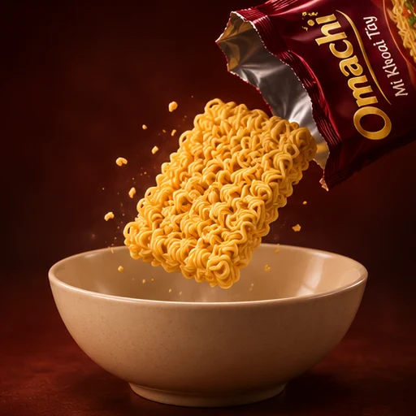
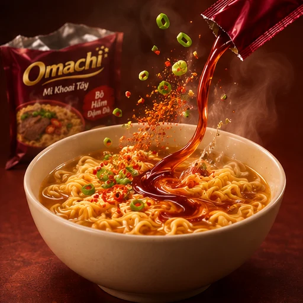
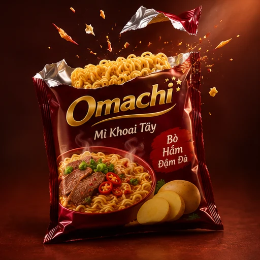
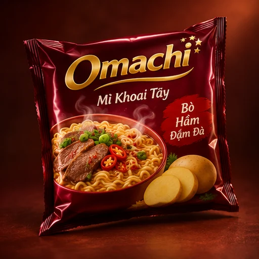

M** A**
Mì gói · Xốt bò hầm
★★★★★
Mình pha bằng tô riêng rồi thêm hành lá và vài lát thịt bò đã nấu chín. Dùng tô rộng nên dễ đảo mì và trộn xốt từ đáy tô.



Chọn loại mì
Sợi mì khoai tây và trứng kết hợp cùng xốt bò hầm đậm vị.
Nội dung và hình ảnh minh họa.
Mì gói · Xốt bò hầm
Mình pha bằng tô riêng rồi thêm hành lá và vài lát thịt bò đã nấu chín. Dùng tô rộng nên dễ đảo mì và trộn xốt từ đáy tô.

Mì tô · Xốt bò hầm
Tô có sẵn, miệng rộng nên dễ khuấy gia vị. Mình thích thêm một ít rau cải chần và ăn khi nước dùng còn ấm.


Mì ly · Xốt bò hầm
Ly nhỏ gọn, để sẵn trong ngăn bàn khá tiện. Mình đặt ly trên mặt bàn, rót nước theo vạch rồi chờ đủ thời gian ghi trên bao bì.

Mì gói · Xốt bò hầm
Mình thường dùng tô lớn để thêm trứng luộc và rau. Nếu muốn cay hơn, chỉ cần cắt thêm vài lát ớt khi mì đã pha xong.

Mì tô · Mì ly
Khi muốn thêm đồ ăn kèm, mình chọn mì tô. Lúc cần một phần nhỏ gọn để cất sẵn thì chọn mì ly.
Sợi mì khoai tây và trứng kết hợp với xốt vị bò hầm. Dạng gói phù hợp khi pha tại nhà và muốn dùng tô riêng, tự chọn rau và món ăn kèm.
Khi mì chín, khuấy đều để xốt hòa vào nước dùng. Có thể thêm hành lá, ngò gai hoặc vài lát bò đã nấu chín. Để dùng như bữa nhẹ, thêm rau cải chần hoặc một quả trứng luộc.
Giữ bao bì nguyên vẹn ở nơi khô ráo, thoáng mát. Kiểm tra hạn dùng, thành phần và thông tin dị ứng in trên bao bì trước khi pha, đặc biệt khi chọn mua để dùng chung.
Pha bằng tô chịu nhiệt riêng. Dễ chọn tô lớn nếu muốn thêm rau, trứng hoặc thịt.
Pha theo hướng dẫn ngay trong tô có sẵn. Miệng tô rộng, thuận tiện khi khuấy và thêm đồ ăn kèm.
Ly cao, gọn, dễ cất trong ngăn bàn. Đặt ly vững trước khi rót nước đến vạch hướng dẫn.
Mở gói, cho vắt mì và các gói gia vị vào tô chịu nhiệt theo hướng dẫn trên bao bì.
Bộ ảnh minh họa cách pha mì gói. Với mì tô và mì ly, xem hướng dẫn in trên từng bao bì.
Đọc hướng dẫn trên bao bì để biết lượng nước và thời gian chờ. Với mì gói, chuẩn bị một tô chịu nhiệt đủ rộng để đựng vắt mì và nước.
Xé theo mép bao bì. Lấy vắt mì và các gói gia vị ra trước khi rót nước để thao tác thuận tiện hơn.
Đặt vắt mì nằm gọn trong tô. Thêm các gói gia vị theo thứ tự in trên nhãn. Với mì tô hoặc mì ly, dùng vật đựng đi kèm theo hướng dẫn.
Đặt tô hoặc ly trên mặt phẳng chắc chắn. Rót đúng lượng nước hoặc đến vạch trên bao bì, rồi đậy và chờ đủ thời gian ghi trên nhãn.
Khi mì đã mềm, mở nắp cẩn thận vì có hơi nóng. Dùng đũa đảo nhẹ và khuấy từ đáy tô để gia vị tan đều.
Thêm hành lá, rau cải chần hoặc vài lát thịt bò đã nấu chín. Ai thích vị cay có thể thêm một ít ớt cắt lát.
Mì gói cần tô riêng. Mì tô và mì ly sử dụng bao bì làm vật đựng khi pha theo hướng dẫn trên nhãn.
Giá hiển thị là giá minh họa theo quy cách đang chọn.